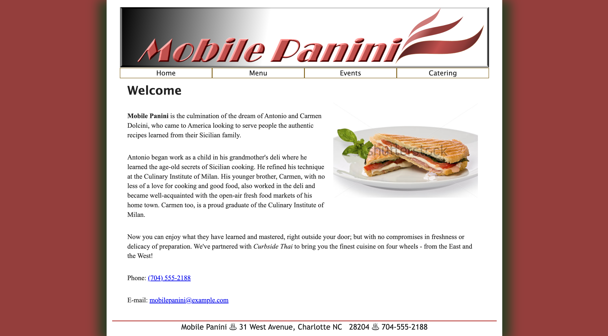
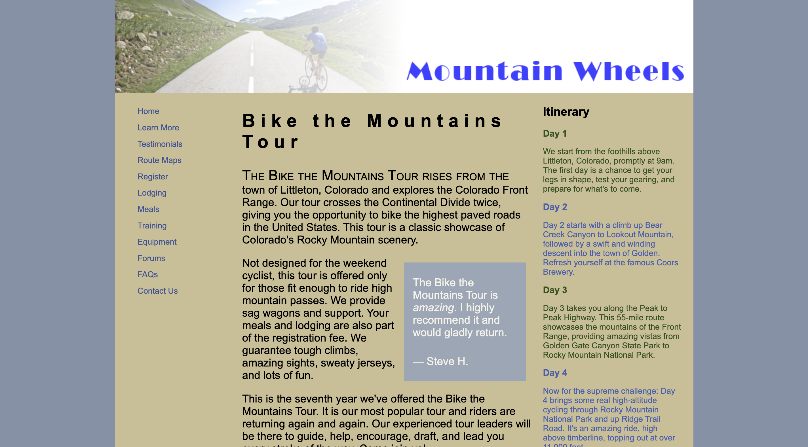
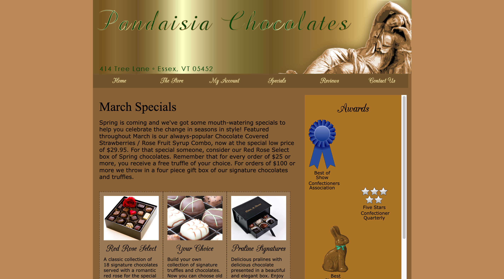
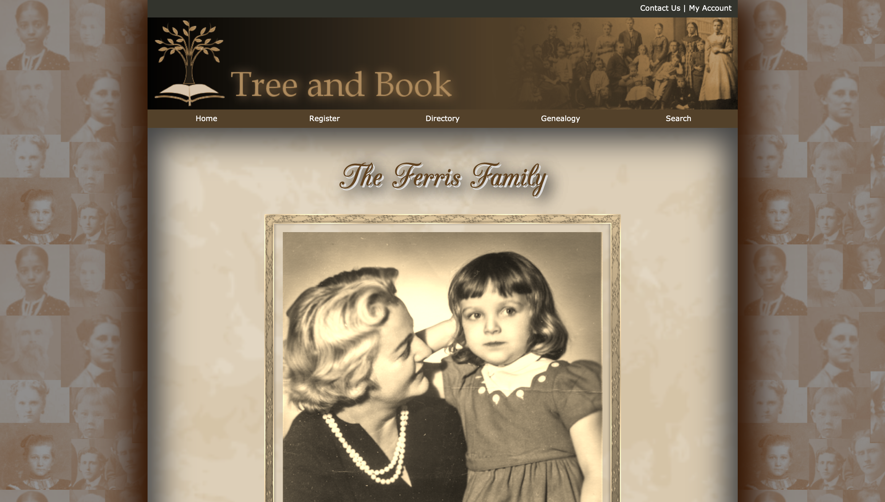
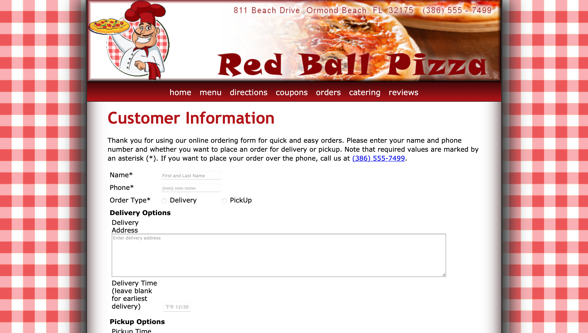
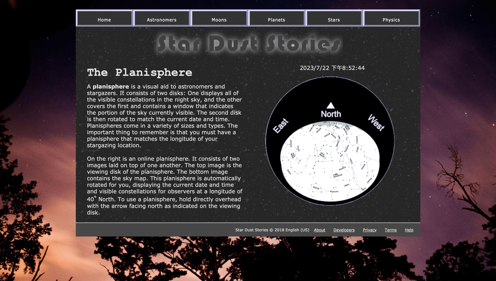
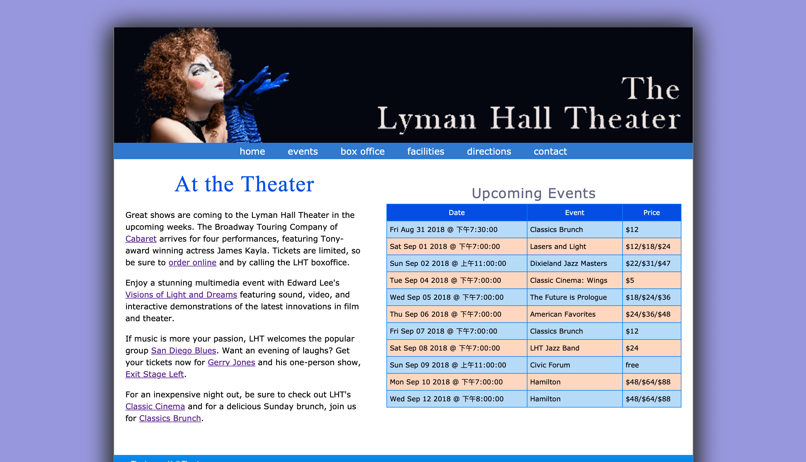
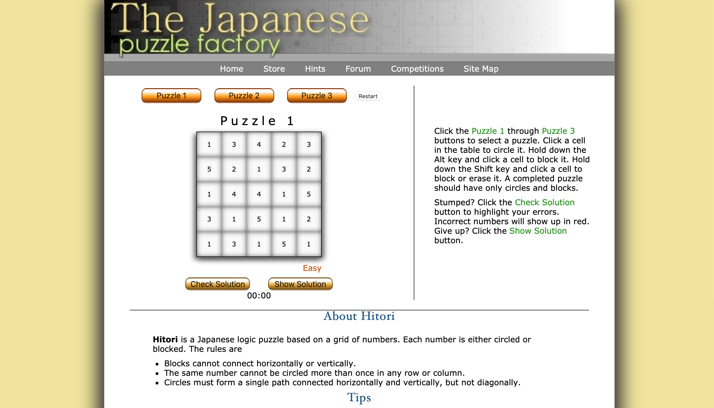
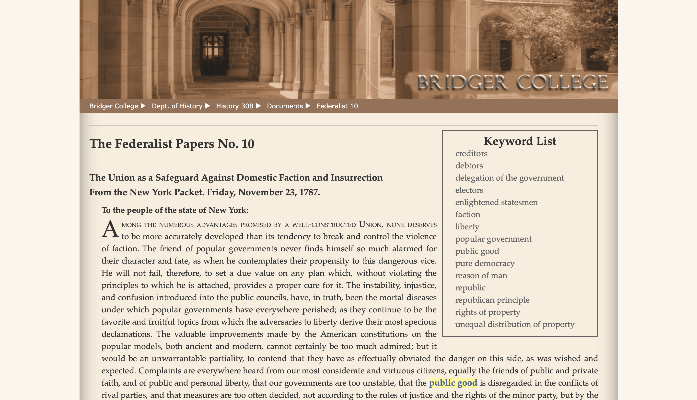

Try it Out Activities Page
Module 1
- 
- 
Curbside Thai has formed a collaboration with Mobile Panini, a fellow food truck vendor. Sajja has requested your assistance in developing a website for their joint venture, mirroring the approach you took for his restaurant. The website will comprise a homepage, an online menu, information about catering services, and a calendar featuring upcoming events hosted by Mobile Panini.
Adriana and Ivan Turchenko, the co-owners of Mountain Wheels, a bike shop and touring company based in Littleton, Colorado, are seeking to enhance their website's content regarding their renowned tour called "Bike the Mountains Tour." This six-day adventure takes cyclists through some of Colorado's highest roads and is highly sought after by enthusiasts. Adriana has already enlisted a colleague to create a three-column layout featuring a list of links in the first column and descriptive text in the second and third columns. Now, she is seeking your expertise to finalize the design by formatting the text and selecting appropriate colors for the page.
Module 2
- 
Anne is looking for your help in developing an additional page for the Pandaisia Chocolates website. This particular page will focus on highlighting the company's special offerings during the month of March, along with showcasing a collection of prestigious awards they have earned. As you work on this page, kindly utilize clip art images as temporary stand-ins until authentic photographs of the awards are obtainable.

The DLR nightly schedule page has undergone a review, and adjustments to the layout have been requested. Additionally, a new page describing the DLR morning schedule needs to be created, incorporating these modifications. The content and style of the webpage have already been largely prepared. My task is to complete the project by designing a web table that showcases the morning schedule, including the timings and programs.
Module 3
- 
- 
Kevin is requesting your assistance in developing an additional familial webpage for the Tree and Book online platform. This particular webpage was specifically designed for the Ferris household, and the content was graciously furnished by Linda Ferris-White. Currently, Kevin is in the process of evaluating a fresh color palette and design approach for the aforementioned page.
Alice is requesting your initiation of the development process for an electronic order form on the Red Ball Pizza website. This form will serve as a means for customers to conveniently place their orders. The form itself will consist of multiple pages, allowing customers to indicate their preference for either pickup or delivery, as well as select their desired toppings for the pizzas.
Module 5
- 
- 
In this assignment, I learned to complete the Star Dust Stories web page by adding JavaScript (JS) functionality based on the current date. Following the steps in the text, I edited the sd_map.html and sd_mapper.js files. The result displays changes on the web page for the specified date and time (current time).
In this assignment, I learned to complete the Lyman Hall Events web page by adding interactive JavaScript (JS) functionality. Following the steps in the text, I edited the lht_events.html and lht_table.js files. The result is an interactive web page displaying events with my name and the date. Overall, this assignment has enhanced my skills in web development and provided valuable experience in creating interactive content using JavaScript.
Module 6
- 
- 
In this assignment, I learned how to complete a web development project that includes a Hitori puzzle game. I needed to use JavaScript to implement game functionalities and ensure proper connections with style sheets and graphic files. Additionally, I learned how to handle the onload event and use the startUp function. I associated event handlers with puzzle buttons, switched between multiple puzzles, and added my own "countdown" and "reset" functionalities to the project, resulting in a more complete presentation of the assignment.
I utilized event listeners to trigger the findKeyWords and makeKeyStyles functions when the page loads. The findKeyWords function effectively generated the keyword list by querying and sorting the relevant elements. Additionally, I successfully linked each item in the list to the corresponding keywords in the document using IDs and href attributes.